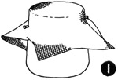
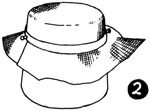
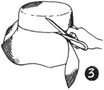
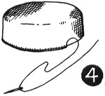

1952—How to Make Hats
by Ruby Carnahan
Blocking a Round or a Square Crown of Elastic Net
BLOCKING SQUARE CROWN
Use the small end of Utility Head Block. Fit a heavy piece of cardboard over small end of block, and fasten cardboard to block with Scotch tape. Wet felt, and block.
BLOCKING ROUND CROWN
Use the large end of Utility Head Block. Use same method for blocking both crowns.
CUTTING CROWN (ILLUS. 1)
Cut a square of elastic net 14" x 15" and dampen thoroughly. Place on crown block, pin to block, front, back and sides. Have a point of net on either side of front and back.
STEAMING CROWN (ILLUS. 2)
Hold block over steam and pull each corner of elastic down and pin to bottom of block. Tie a blocking cord tight around block. Mark back and front of crown and let dry on block.
TRIMMING OFF BOTTOM OF CROWN (ILLUS. 3)
Measure and mark depth of crown on net. Slip a corset stay or a nail file under edge of net to loosen crown from block, and remove crown. Cut off excess net around bottom of crown on mark.
WIRING CROWN (ILLUS. 4)
Measure a wire to fit bottom of crown and join ends of wire with a wire joiner. Sew wire around bottom of crown, using a button hole stitch. Cut a 2" bias strip of crinoline (stretch bias strip of crinoline before using), fold over wired edge of crown and baste crinoline to net.